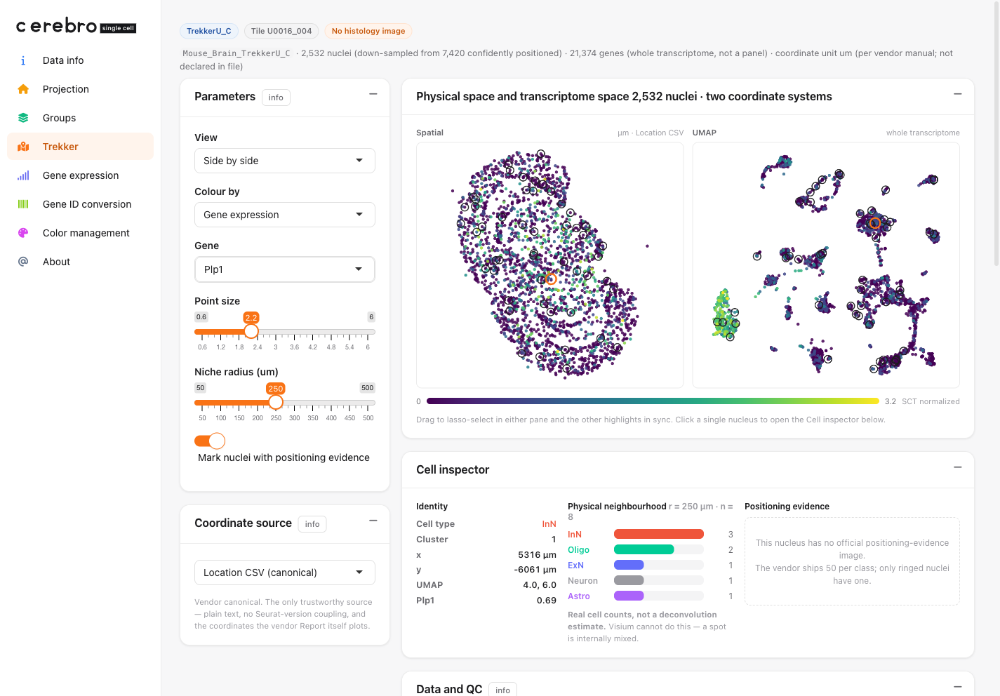
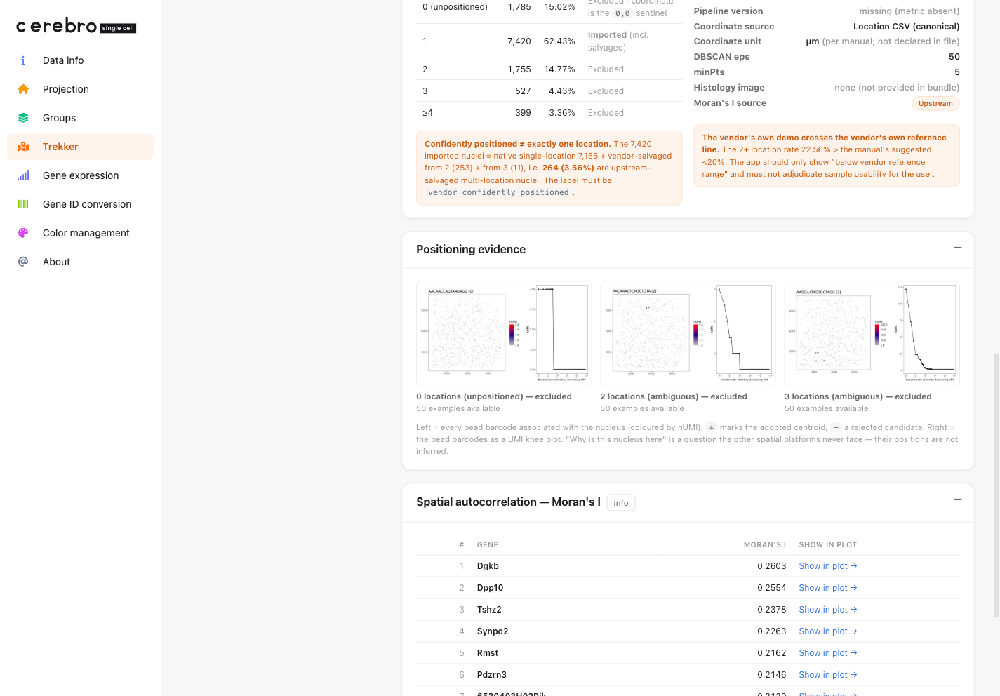

Trekker single-cell spatial mapping: from a vendor bundle to an interactive app
Xuesong Wang
24 July, 2026
Source:vignettes/trekker_spatial_mapping.Rmd
trekker_spatial_mapping.RmdWhat this guide does
This is an end-to-end, reproducible walk-through of the
Trekker page: what the data is, where it comes from,
what is inside the download, and exactly how the shipped demo
.crb is built from it. Every code block is the real build
recipe (it lives in data-raw/build_trekker_demo.R); it is
shown with eval = FALSE because the raw input is a
multi-gigabyte, access-gated vendor bundle, not something a vignette can
fetch.
The Trekker demo is real measured data — down-sampled, but not invented. So this guide is also, unavoidably, a guide to reading it honestly: where the coordinates really live, what “confidently positioned” does and does not mean, and which numbers are the vendor’s rather than Cerebro’s.
What Trekker is
Trekker (Curio Bioscience / Takara Bio, the Trekker Single-Cell Spatial Mapping Kit) tags cell nuclei with location barcodes carried by beads at known positions, then recovers each nucleus’s 2-D position from ordinary single-nucleus sequencing. It is built on Slide-tags foundational technology.
Three ideas shape the page:
Real single cells × whole transcriptome. This is the cell Trekker occupies that the other platforms cannot: Visium measures the whole transcriptome but per 55 µm spot (not single cells); Xenium/MERFISH are single-cell but only over a gene panel; Trekker gives genuine single nuclei and all ~21k genes. Because every nucleus therefore has both a UMAP position and a physical position, the page shows the two side by side and lets you morph between them.
Positions are inferred, and the evidence is auditable. A Visium spot is simply there; a Trekker nucleus’s location is estimated from its bead barcodes. The vendor ships a positioning-evidence image for a sample of nuclei (the bead-barcode cloud plus a UMI knee plot), so “why is this nucleus here?” is a question you can actually answer. The page surfaces those images.
There is usually no matched histology image. Positions come from bead barcodes, not a tissue photo, so — unlike the Visium/Xenium/MERFISH demos — the Trekker
.crbcarries no histology raster. That is correct, not an omission.
CerebroNexus only ingests and displays the vendor pipeline’s output; it never runs the vendor Primary Analysis Pipeline (that is an HPC/cloud job far larger than a Shiny session).
Getting the data (registration required)
The Trekker example bundles are not public downloads. Access is gated:
- Register for / sign in to a Curio Bioscience / Takara Bio account and request access to the Trekker example data.
- Download a per-sample bundle. This demo uses the
smallest of the example bundles,
Mouse_Brain_TrekkerU_C_Sept2025.tar.gz(~1.3 GB compressed). - Extract it and note the
output/directory:
# in a shell
tar -xzf Mouse_Brain_TrekkerU_C_Sept2025.tar.gz
export TREKKER_OUTPUT_DIR=/path/to/Mouse_Brain_TrekkerU_C_Sept2025/outputBecause the source is access-gated, the build script never phones
home; it reads only from $TREKKER_OUTPUT_DIR. The raw
bundle is git-ignored and not redistributable; only the
derived, down-sampled .crb ships with the package.
What is inside the bundle
The single-reaction bundle’s output/ folder holds the
analysis object plus a set of companion tables and QC images. The build
reads exactly five of them:
| File | What the build takes from it |
|---|---|
<S>_ConfPositioned_seurat_spatial.rds |
whole-transcriptome expression, UMAP, Louvain clusters |
<S>_Location_ConfPositionedNuclei.csv |
the canonical (x, y) coordinates, in µm |
<S>_summary_metrics.csv |
positioning QC (kept under the vendor’s own field names) |
<S>_variable_features_spatial_moransi.txt |
the upstream (vendor) Moran’s I table |
cell_bc_plots/cells_{0,1,2,3}_*/ |
positioning-evidence JPEGs (50 per class) |
<S> is the sample id,
Mouse_Brain_TrekkerU_C. The directory names
cells_0/1/2/3_coordinates_assigned themselves record that
positioning is a four-way (0 / 1 / 2 / 3+ locations) classification, not
a binary one.
The three coordinate orientations (a real gotcha)
The same nucleus appears in three places inside the object, in three different orientations. This is measured, not assumed:
| Source | Value for one example nucleus | Relation to canonical |
|---|---|---|
Location CSV (SPATIAL_1,
SPATIAL_2) |
(6647, -4916) |
canonical (the authority) |
SPATIAL reduction |
(6647, +4916) |
y-mirrored |
@images$slice1 (GetTissueCoordinates) |
(-4916, 6647) |
axes transposed |
The generic spatial extractor reads @images — and would
therefore silently draw the tissue transposed 90°, with
no error. So the build takes coordinates from the Location CSV
only, and the page’s “Coordinate source” control lets you
switch between all three so the discrepancy is visible rather than
hidden.
Build the demo .crb
The rest of this section is
data-raw/build_trekker_demo.R, narrated. It needs
Seurat, Matrix, the magick and
base64enc packages (build-time only), and the in-tree
CerebroNexus (for the new trekker slot on
Cerebro_v1.3).
Setup
library(Seurat)
library(Matrix)
pkgload::load_all(".", quiet = TRUE) # in-tree class with add/getTrekker()
set.seed(42)
SAMPLE <- "Mouse_Brain_TrekkerU_C"
BASE <- Sys.getenv("TREKKER_OUTPUT_DIR")
f <- function(suffix) file.path(BASE, paste0(SAMPLE, suffix))
N_CELLS <- 2500L # down-sampled nucleus countStep 1 — read the vendor outputs
The object carries a legacy SlideSeq
@images entry that predates the misc slot, so
any subset() on it errors. We never use
@images (coordinates come from the CSV), so we drop it up
front to make the object subsettable.
so <- readRDS(f("_ConfPositioned_seurat_spatial.rds"))
DefaultAssay(so) <- "SCT"
so@images <- list() # coordinates come from the CSV, not here
bc_all <- colnames(so)
# canonical coordinates (µm) — the vendor Location CSV is the authority
loc <- read.csv(f("_Location_ConfPositionedNuclei.csv"))
names(loc)[1] <- "barcode"
loc <- loc[match(bc_all, loc$barcode), ]
cx <- loc$SPATIAL_1
cy <- loc$SPATIAL_2
um <- Embeddings(so, "umap")
clab <- as.integer(as.character(so@meta.data$seurat_clusters)) # 0-based cluster idStep 2 — cell types
The object ships 18 unnamed Louvain clusters. They were labelled once
by marker z-score argmax over canonical mouse-brain markers, and
hard-coded (indexed by cluster id) so the build is deterministic.
Clusters without a clear marker winner are honestly left
Neuron, not over-called.
# Snap25/Slc17a7 -> ExN, Gad1/Gad2 -> InN, Plp1/Mbp -> Oligo, Aqp4/Gfap -> Astro,
# Cx3cr1/C1qa/Csf1r -> Micro, Pdgfra -> OPC, Prox1 -> DG
CELLTYPE_BY_CLUSTER <- c(
"ExN", "InN", "Oligo", "ExN", "Astro", "InN", "DG", "ExN", "ExN",
"Neuron", "OPC", "Micro", "Neuron", "DG", "ExN", "Neuron", "ExN", "Neuron"
)Step 3 — positioning QC and upstream Moran’s I
QC is parsed straight from summary_metrics.csv, keeping
the vendor’s own field names; a metric that is absent stays absent
(never replaced by 0). The Moran’s I table is the vendor’s — labelled
“Upstream” on the page and never mixed with Cerebro’s own.
sm <- read.csv(f("_summary_metrics.csv"))
mv <- setNames(as.character(sm$Value), sm$Metrics)
# qc <- list(sample_id = mv[["Sample_ID"]], tile_id = mv[["Tile_ID"]],
# total_nuclei = ..., conf = ..., pct_2plus = ...,
# o_1 = ..., salv_2 = ..., salv_3 = ..., n_0 = ..., ...) # see the script
mi <- read.table(f("_variable_features_spatial_moransi.txt"),
header = TRUE, sep = "\t")
mi <- mi[order(-mi$MoransI_observed), ] # top spatially variable genesStep 4 — positioning-evidence images
cells_1_coordinates_assigned/<BC16>.jpeg is a
confidently-positioned nucleus’s evidence image; the file stem is the
16-character nucleus barcode, so <BC16>-1 is the
object barcode. Each image is down-scaled and base64-embedded so the
whole demo — expression and evidence — stays in the one
self-contained .crb.
ev_dir <- file.path(BASE, "cell_bc_plots")
ev_file <- list.files(file.path(ev_dir, "cells_1_coordinates_assigned"),
pattern = "\\.jpe?g$", full.names = TRUE)
ev_bc <- paste0(sub("\\.jpe?g$", "", basename(ev_file)), "-1")
encode_jpeg <- function(path, max_px = 620L, quality = 68L) {
img <- magick::image_read(path)
img <- magick::image_resize(img, paste0(max_px, "x", max_px, ">"))
raw <- magick::image_write(img, format = "jpeg", quality = quality)
paste0("data:image/jpeg;base64,", base64enc::base64encode(raw))
}Step 5 — sub-sample (whole genes, force-include evidence)
The object is 21,374 genes × 7,420 nuclei. Embedding whole-transcriptome expression for all of them blows a sensible size budget (measured: ~3.8 MB at 2,500 nuclei, before images). “Whole transcriptome” is the point, so we keep all genes and down-sample nuclei instead — stratified by cluster — and force-include the 50 nuclei that carry an evidence image, so the drill-down still works.
Step 6 — export a Cerebro object and attach the trekker
slot
We build an ordinary Cerebro_v1.3 object with
exportFromSeurat() (whole- transcriptome expression + UMAP
+ cluster/celltype groups) — this is what
powers gene colouring on the page. Then we attach a trekker
slot with everything else the bespoke page needs.
sub <- subset(so, cells = sub_bc)
sub$celltype <- CELLTYPE_BY_CLUSTER[as.integer(as.character(sub$seurat_clusters)) + 1L]
sub$cluster <- factor(as.integer(as.character(sub$seurat_clusters)))
sub$nUMI <- sub$nCount_SCT; sub$nGene <- sub$nFeature_SCT
sub <- DietSeurat(sub, assays = "SCT", dimreducs = "umap") # drop dense scale.data
exportFromSeurat(
sub, assay = "SCT", slot = "data",
file = "inst/extdata/v1.4/demo_trekker.crb",
experiment_name = "Trekker mouse brain (TrekkerU_C, demo)",
organism = "mm",
groups = c("cluster", "celltype"), main_group = "celltype",
nUMI = "nUMI", nGene = "nGene"
)The trekker slot holds the page’s content. Every vector
is unname()d — a named R vector serialises to a
JSON object (barcode → value), but the client indexes these positionally
as arrays. The barcodes field lets the server pull a gene’s
expression aligned to these exact points, regardless of the expression
matrix’s internal column order.
trekker <- list(
meta = list(n_cells = length(idx), n_cells_full = length(bc_all),
n_genes_obj = nrow(so), unit = "um (per manual; not declared)"),
qc = qc, # vendor field names (Step 3)
barcodes = unname(sub_bc), # SAME order as the arrays below
x = unname(round(cx[idx], 2)), y = unname(round(cy[idx], 2)), # canonical µm
ux = unname(round(um[idx, 1], 3)), uy = unname(round(um[idx, 2], 3)), # UMAP
clusters = unname(clab[idx]),
celltype = CELLTYPE_BY_CLUSTER, # cluster id -> label
moran = moran, # upstream vendor Moran's I
evidence = evidence, # {cell, bc, img=base64}
qc_examples = qc_examples # one image per excluded class
)
crb <- readRDS("inst/extdata/v1.4/demo_trekker.crb")
crb$addTrekker(trekker)
saveRDS(crb, "inst/extdata/v1.4/demo_trekker.crb", compress = "xz")The whole build is one command:
# TREKKER_OUTPUT_DIR=/path/.../output Rscript data-raw/build_trekker_demo.R
# -> inst/extdata/v1.4/demo_trekker.crb (~4.7 MB, 2,532 nuclei x 21,374 genes,
# 50 embedded evidence images)Load it in the app
The bundled app already lists the demo, so it is one dropdown click:
shiny::runApp(system.file("app.R", package = "CerebroNexus"))
# choose "Mouse brain (Trekker)" in the "Select dataset:" switcherTo host your own Trekker .crb, pass it to
createShinyApp(). The Trekker tab appears
automatically whenever the loaded .crb carries a
trekker slot.
What the page shows
Physical space and transcriptome space, side by side. Every nucleus has both a spatial and a UMAP position, so the two panes are linked: lasso-select in one and the other highlights in sync. Colour by cell type, cluster, or any gene.

Whole-transcriptome gene colouring. Pick (or type) any of the ~21k measured genes. Here Plp1 — an oligodendrocyte marker — lights up the Oligo cluster in the UMAP and its scattered cells in tissue, a quick sanity check that the two coordinate systems refer to the same nuclei.

Data and QC — in the vendor’s own words. Positioning class distribution, the salvage caveat, provenance (including a missing pipeline version, kept missing), the positioning-evidence gallery, and the upstream Moran’s I table.

Honest scope
-
ConfPositioned≠ “exactly one location”. A fraction of the confidently- positioned set are vendor-salvaged multi-location nuclei (264 / 7,420 ≈ 3.56% here), and the object’snumber_clustersis all1— the salvage trace is erased. The page labels the setvendor_confidently_positioned, not “one location”. -
Unpositioned nuclei are
(0, 0)sentinels, notNA; they are class 0 and excluded, never plotted at the origin. -
The vendor’s own demo exceeds the vendor’s own
guideline: the 2+-location rate (22.56%) is above the manual’s
<20%. The page shows “below vendor reference range” and does not adjudicate sample usability for you. - Moran’s I is the upstream value, computed differently from Cerebro’s own (Euclidean 6-NN); the two are labelled separately and are not interchangeable.
- The demo is a down-sampled subset of one reaction, shown so the page works out of the box — not a biological result to read off.
See data-raw/trekker.md for the full design notes and
data-raw/DATASETS.md for the one-line provenance entry.
sessionInfo()
#> R version 4.6.0 (2026-04-24)
#> Platform: x86_64-pc-linux-gnu
#> Running under: Ubuntu 24.04.4 LTS
#>
#> Matrix products: default
#> BLAS/LAPACK: /nix/store/ba0pync7rmzsq32xxaz9l9hs3zj7hil4-blas-3/lib/libblas.so.3; LAPACK version 3.12.0
#>
#> locale:
#> [1] LC_CTYPE=en_US.UTF-8 LC_NUMERIC=C
#> [3] LC_TIME=en_US.UTF-8 LC_COLLATE=en_US.UTF-8
#> [5] LC_MONETARY=en_US.UTF-8 LC_MESSAGES=en_US.UTF-8
#> [7] LC_PAPER=en_US.UTF-8 LC_NAME=C
#> [9] LC_ADDRESS=C LC_TELEPHONE=C
#> [11] LC_MEASUREMENT=en_US.UTF-8 LC_IDENTIFICATION=C
#>
#> time zone: Etc/UTC
#> tzcode source: system (glibc)
#>
#> attached base packages:
#> [1] stats graphics grDevices utils datasets methods base
#>
#> loaded via a namespace (and not attached):
#> [1] digest_0.6.39 desc_1.4.3 R6_2.6.1 fastmap_1.2.0
#> [5] xfun_0.59 cachem_1.1.0 knitr_1.51 htmltools_0.5.9
#> [9] rmarkdown_2.31 lifecycle_1.0.5 cli_3.6.6 sass_0.4.10
#> [13] pkgdown_2.2.0 textshaping_1.0.5 jquerylib_0.1.4 systemfonts_1.3.2
#> [17] compiler_4.6.0 tools_4.6.0 ragg_1.5.2 bslib_0.11.0
#> [21] evaluate_1.0.5 yaml_2.3.12 otel_0.2.0 jsonlite_2.0.0
#> [25] rlang_1.2.0 fs_2.1.0 htmlwidgets_1.6.4